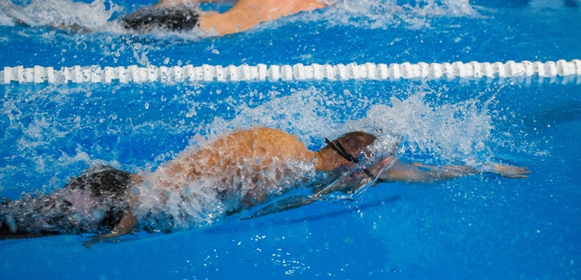

ТРИАТЛОН
Мы создали проект ТРИАТЛОН для продвижения активного и здорового образа жизни в Гродно.
ТРИАТЛОН объединяет профессионалов и любителей циклических видов спорта. В рамках соревнований проводятся индивидуальные и командные гонки, старты для детей и людей с ограниченными возможностями.
Цель ТРИАТЛОН — создать эффективную модель для развития любительского спорта в которой, Государство, региональные и муниципальные власти, общественные организации, спортивные клубы, могут работать вместе, улучшать качество мероприятий и создавать положительный экономический эффект в местах проведения соревнований.